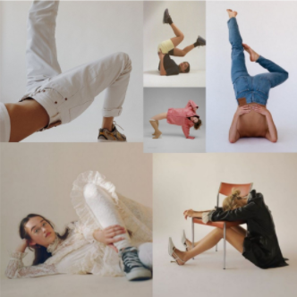
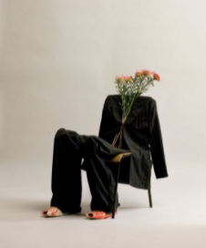

Empecemos recordando que con la inspiración no se obtiene como resultado una réplica, la inspiración en el sector artístico se asocia a un brote de creatividad, es más, se trata de la fusión de diversas imágenes, emociones, conceptos, vivencias, entre otros.Este aspecto consiste en el empuje que los motiva, como consecuencia se obtiene una pieza que llene sus exigencias y considere apta para ofrecer a su público.
El primer paraíso de inspiración es Pinterest, las posibilidades de lo que encuentres son infinitas, si tus fotografías necesitaran de una modelo, este es el lugar ideal para encontrar poses, desde la típica con la mano a la cintura hasta algunas poses más excéntricas como la que vemos a continuación.
¿Y si no tenemos modelos? No es ningún secreto que armar la composición sea posiblemente lo más tedioso, aquí también podrás hallar miles de ellas, no te dejes llevar por la emoción, a la hora de fotografiar recuerda que también se debe reflejar la esencia de tu marca o proyecto.
Las opciones de composición son innumerables, algunas más creativas que otras.
Algunas son más básicas, pero ninguna pierde el estilo.
Esta red social te otorga las posibilidades de llenarte de ideas y crear fotografías únicas con poca utilería u otras con más. Podemos capturar posibilidades tanto en un estudio básico o en el exterior, solo es cuestión de adentrarnos en este mundo.
Bueno revelad@, vamos despidiéndonos. Existen otras redes sociales a las que podemos sacarle el jugo ¿Adivinas cuál será la siguiente que hablaremos? Seguro que si, comentanos cuál crees que es.